原创工程手绘：实际交付预览
生图 API 已按用户决定停用（速度不可接受）。已接入三张 API 图保留；其余图不再等待生成，继续使用仓库自绘矢量。S2 五张定量/电路图已完成手绘语言改版。本页不把待审候选、缺图或自绘 SVG 算成已录用 API 图。
样章状态 · 图像来源与摘要 · 管线与未验证项
S1 测量链四张矢量图
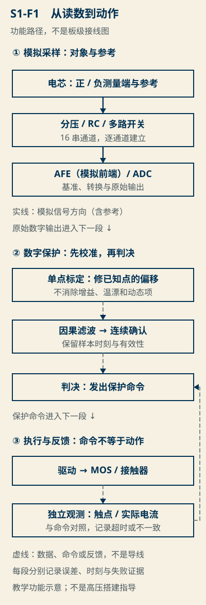
S1-F1 信号路径：校准修固定偏差，滤波与确认负责噪声与误动作。
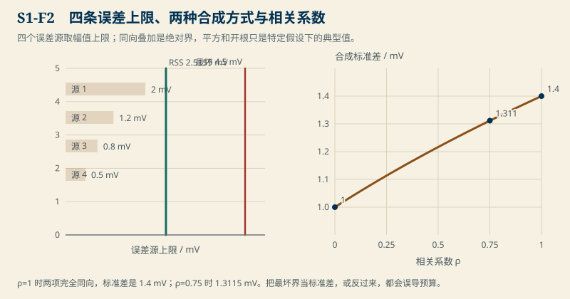
S1-F2 共同/独立误差合成：最坏界与 RSS 的适用条件不同。
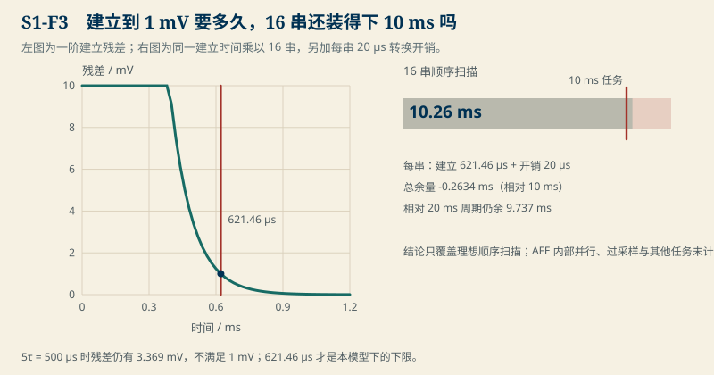
S1-F3 建立精度与 16 串扫描时序：超 10 ms 任务、装进 20 ms 周期。
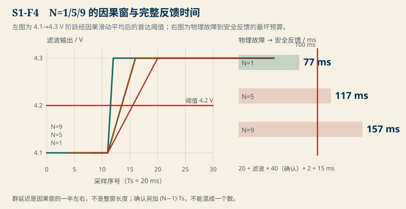
S1-F4 滤波窗与完整反馈时间：确认另加 40 ms，100 ms 窗口只容许 N=1。
已接入的 API 手绘
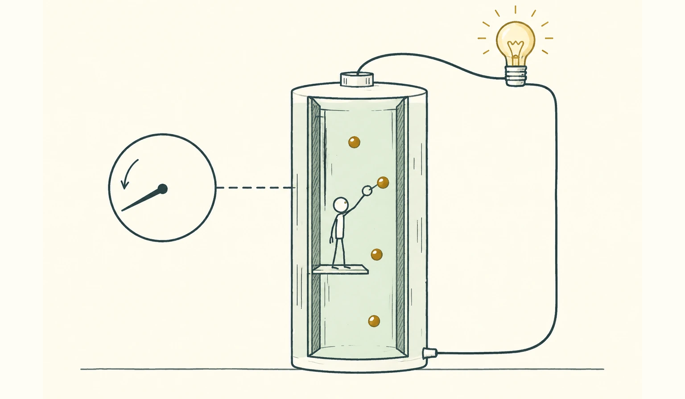
第 1 章章首。手绘概念、AI 生成、非实拍；人物与圆点只是辅助理解的比喻，不是电化学实验记录。
第 7 章章首。多枚采样点不作为确认拍数依据；实际保护事件与时间在正文和定量图中给出。
S2 章首。库存卡是不可见状态的隐喻，不画电解液液位，不提供任何可读测量值。
SPEC 三类机制试版
以下是准确自绘矢量，不是 API 生成图。试版仅核对物理关系与视觉，不代表 S1、S3 的正文或实验完成。手机保留展开的等价说明，不要求先放大图才能获取关键关系。
S1 · 信号链
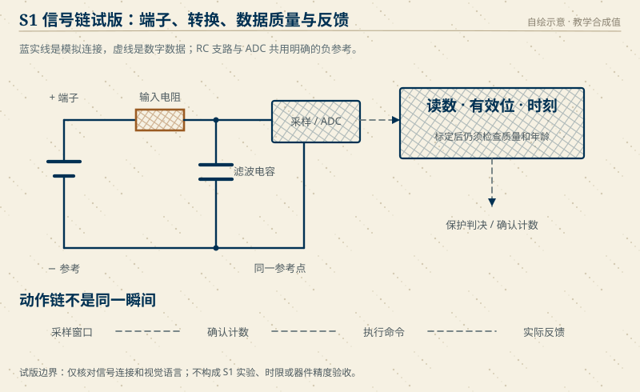
读图等价说明
电芯正端经输入电阻到 ADC；滤波电容接在电阻之后，从采样节点接至负参考，ADC 也使用这条负参考。蓝实线是模拟连接，虚线为数字数据。数据必须同时携带读数、有效性和采样时刻。采样、确认、命令、反馈是四个不同事件，命令不能冒充动作完成。
S2 · RC 等效电路
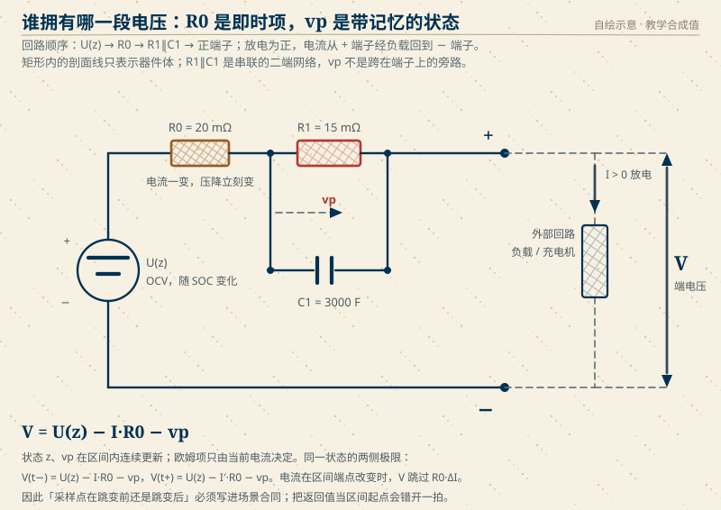
读图等价说明
回路依次为开路电压源、欧姆电阻、极化二端网络、正端子、负载、负端子。极化网络内部电阻与电容并联，但整体与回路串联；其底支路不接负回线。放电为正，端电压等于开路电压减两项压降。电流跳变改变欧姆项，不能让连续的极化状态瞬间归零。
S3 · 预充功率路径
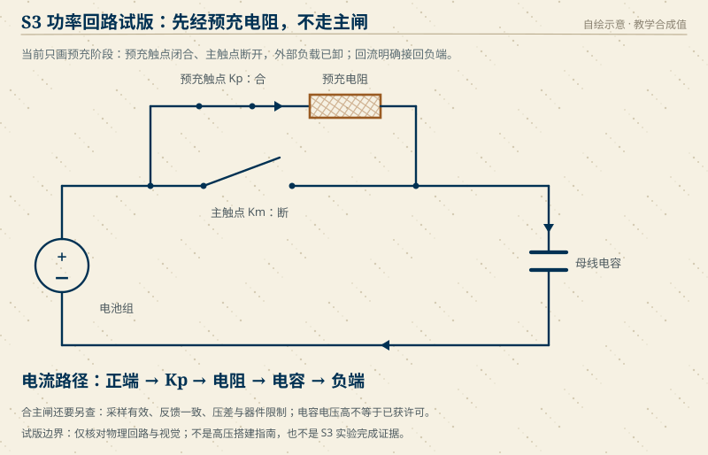
读图等价说明
电池正端分成并联两支路：主触点，以及预充触点加电阻。图中仅画预充阶段，主触点断开，预充触点闭合，负载已卸。电流经预充电阻、母线电容回到负端。母线电压高本身不是主闸许可，还需采样有效、反馈一致、压差与具体器件限制证据。非高压搭建指导。
S2 · 保持数值真源的手绘数据图
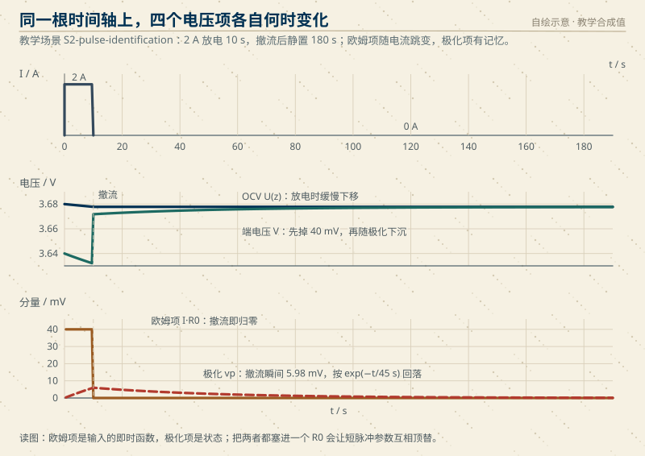
同一时间轴。电压下降向下画、恢复向上画；撤流时只有欧姆项瞬时归零，极化继续衰减。
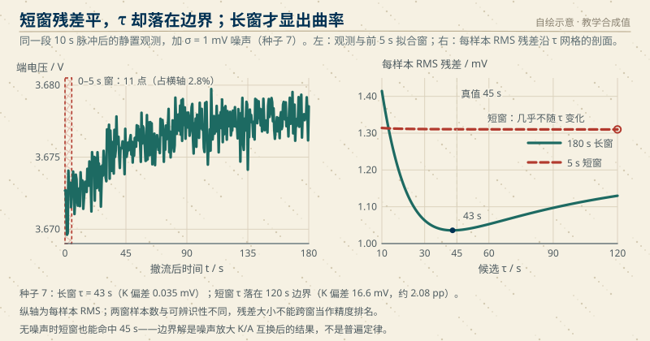
每样本 RMS 残差，固定窗口内与 SSE 同解。不同窗口不能按纵向残差直接比较精度；图上的极小点不是置信区间。
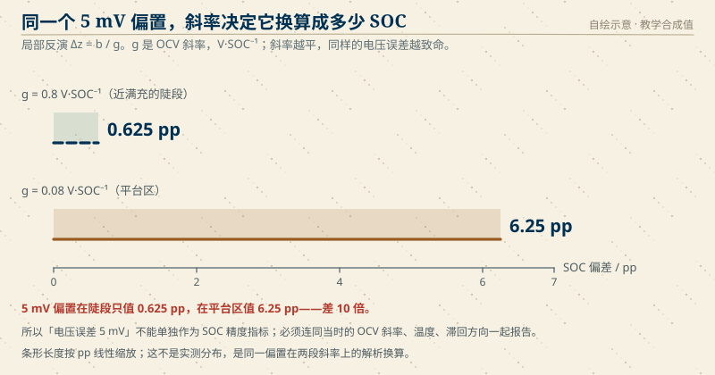
同一个电压偏置，在两段 OCV 斜率下相差十倍；解析换算，不是实测分布。
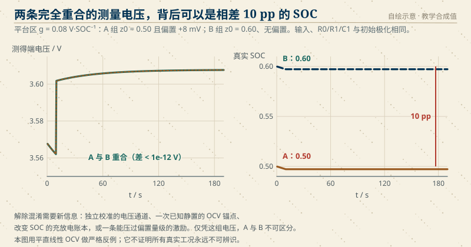
严格合成反例。图像、代码与正文必须共同核对；不据此声称所有真实工况永远不可辨识。
上列数据曲线未抖动、未用图像模型重绘；纸纹、字体和器件剖面只改变视觉。真人读者试读、独立工程审读及真实硬件证据仍未验证。
S3 预充时序（深研样章）
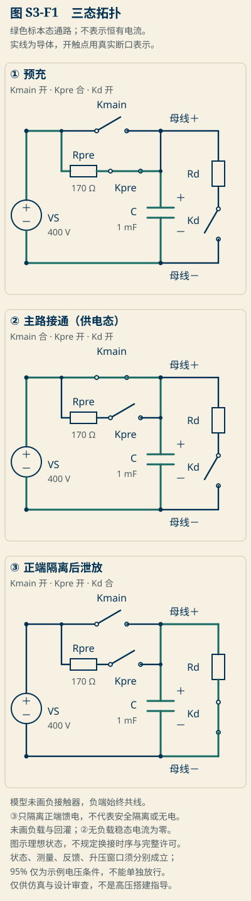
图 S3-F1 三状态三条路：预充态仅预充支路导电；泄放支路断开。
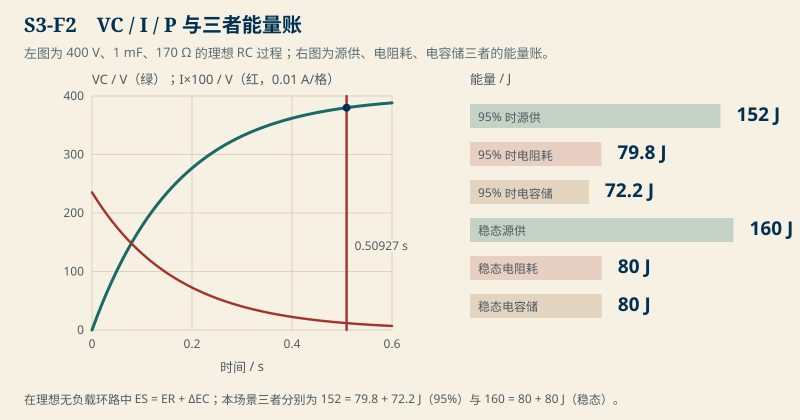
图 S3-F2 VC/I/P 与三者能量账；95% 时 152 = 79.8 + 72.2 J，稳态 160 = 80 + 80 J。
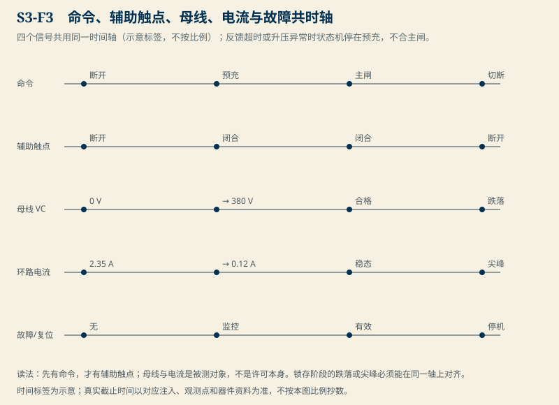
图 S3-F3 命令、辅助触点、母线、电流与故障共时轴。
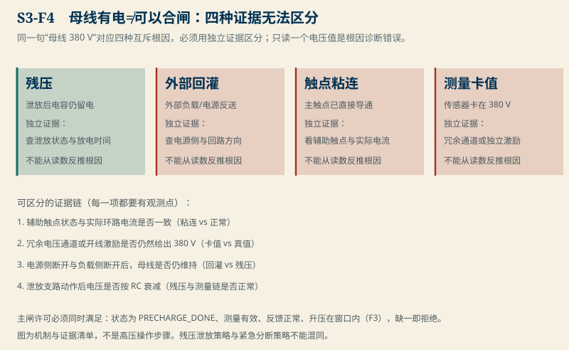
图 S3-F4 母线有电不等于可以合闸；四种根因要用独立证据区分。
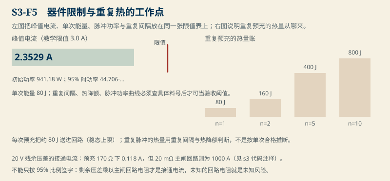
图 S3-F5 器件限值与重复热；20 V 残压在 20 mΩ 主闸回路下冲 1000 A。